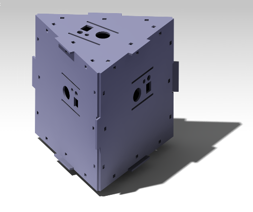

Helios 2
June 28, 2013
Nature is Conspiring Against Us!
Unfortunately, the Helios 2 launch has had to be delayed again. From a technical perspective we are essentially ready to launch - we just need a to sort out a few small details. However, the weather in Tamworth is very bad. Planes are landing with ice on their wings, and the jet stream is very fast. Even if we were able to launch the balloon safely, it would almost certainly end up in the ocean due to the high wind speeds. Therefore, we are delaying the launch to September.
May 16, 2013
10kg Chocolate Raffle (Again)
Today our school principal approved our request to conduct fundraising activities. We are going to be raffling a 10kg block of Cadbury milk chocolate to cover the expenses of the launch. Last time we raised $400, we are hoping to get at least that much this time.
EDIT: The numbers are in - we raised $700 in our raffle! This is great news for our project! Thanks to everyone who bought a ticket!
March 27, 2013
New Capsule Design
Liam is out of hospital now, so it is back to business! We are now aiming for a launch in April.
Over the last couple of weeks we have experimented with cardboard mockup capsule designs. Our Tetrahedron design proved to be ineffective; there was not enough overlap in the GoPros’ field of view for us to stitch the frames together reliably. We went on to experiment with a cuboid shape, which was slightly more effective, but again did not offer the overlap we required for stitching. Finally, we experimented with a triangular prism configuration which works very well. I will be getting the design laser cut later this week.

CATIA render of prism design (base facing upward)
As we can only afford four GoPros, both fiscally and in terms of weight, we have had to sacrifice the full 360*180 field of view we had first aimed for, instead opting for a slightly reduced field of view in the vertical plane. This means that the capsule will record footage in all directions except for directly above.
Take a look at this low resolution test footage we captured using three cameras in a triangular configuration. In the flight footage there will also be a downward facing camera, and we will present the film in an interactive viewer.
March 13, 2013
Launch Delayed
This is a just a quick post to let everyone know that the launch will not be happening this April. Unfortunately, Liam had a pneumothorax (lung collapse) and will not be fit to travel to Tamworth these holidays. At least we will have some more time to work out some of the issues we have been having with the capsule. A new post will be coming out soon, detailing our progress thus far.
January 5, 2013
Here we go again!
Today we decided that we would embark on a second Helios project with a launch in March, 2013. Helios 2 will use four GoPro HD Hero cameras to capture panoramic video. We are thinking that we will place the cameras in a tetrahedral array so that we can capture video in all directions. We are also going to upgrade the data logging capabilities of the capsule and add a second nichrome hot wire below the parachute so that we can recover the capsule more easily if it lands in a tree (again).